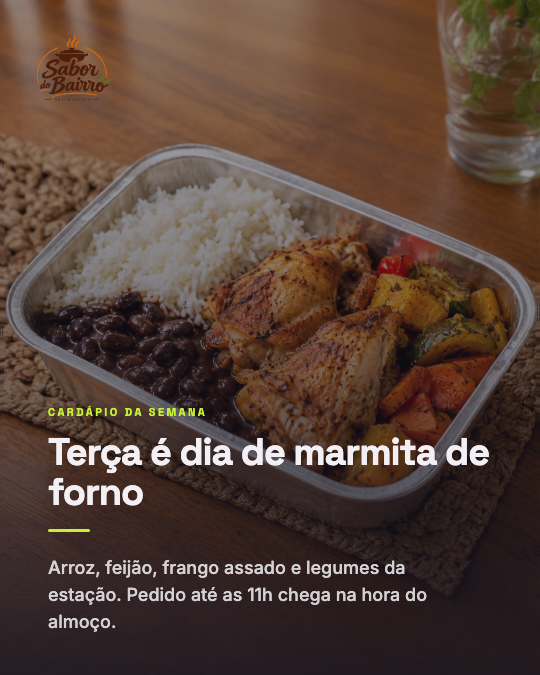
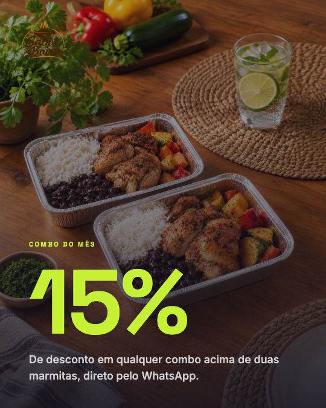

Bastidores
Quanto tempo leva criar um carrossel
Cronometrei os dois jeitos que já usei pra fazer o mesmo post
Cronometrei os dois jeitos que já usei pra fazer o mesmo post
Pesquisar o tema, escrever o texto de cada slide, montar no Canva, ajustar fonte e cor pra não sair torto, exportar um por um. Três, quatro horas, e olha que eu já fiz isso um monte de vezes.
É o tempo entre escrever o roteiro e ter os 5 slides prontos pra postar, já na cara da marca. O texto eu escrevo uma vez, o design se aplica sozinho.
Viram tempo pra atender cliente, fechar venda, resolver o que só o dono do negócio resolve. É isso que ninguém terceiriza.
Exemplo pra um restaurante de delivery, roteiro escrito uma vez e arte aplicada no mesmo fluxo que uso aqui.


Antes de automatizar qualquer coisa, escolha duas cores e uma fonte e não mude mais. Metade do tempo que você perde montando post é decisão de design que já devia estar tomada.